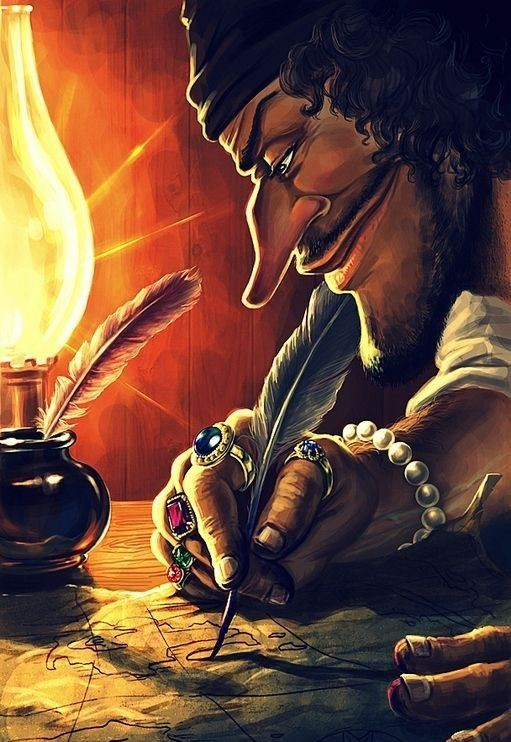
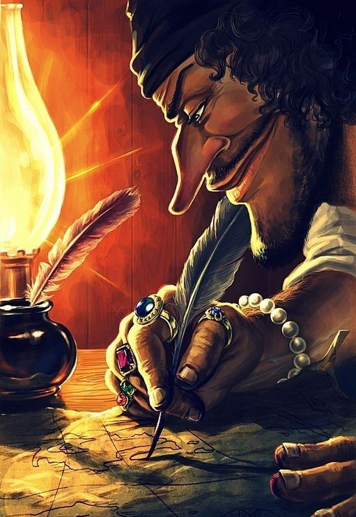

EL MERO DON RAMÓN
¿Quién es?
Don Ramon fue un personaje muy conocido de la serie mexicana El Chavo del 8.
Características:
- Sabe boxear
- No paga renta
- Siempre se la juega de loco
Un capítulo de el:
Ver CapituloFotos:

 
